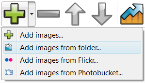

Overview
June 14, 2013 - Are you interested in presenting information on your website in a way that it will catch the attention of web browsers? jQuery slider maker has all the solution to your Slider Mp3 Player Jquery needs.
jQuery Slider is a slideshow with stunning visual effects and tons of professionally made templates. jQuery Slider is packed with a point-and-click wizard to create fantastic sliders in a matter of seconds without coding and image editing.
More Info
JQuery provides you with the best way to present information to your audience whether online or in an event. An application that has the jquery inline div slider capacity to meet all your slider jquery et flash need is the software application of jQuery image slider with text. This is an slider jquery as imageflow application that helps you in integration of both photos and text to form slideshows. With this application you can present paragraphs on your jquery slider dnn website in form of slideshows together with photos. The slider and jquery plugin conflict days where photos and text occupied large amount of spaces on the jquery slider show promo web page are gone. With this jquery slider exsamples new application you can save on space on your webpage. The jquery slider thickbox with image application allows you to have multiple sets of slideshows on a visual jquery codeigniter slider single webpage for this reason the jquery slider e swf applications are widely used by e-business for advertisements.

If you want to give your website a glamorous look you can get these jquery slider opening pdf application softwares by downloading them on the jquery slider exapmples internet. The free jQuery slider with text come coded for those who want an already working applications. The jquery text slider only only task that remains after downloading this jquery slider inside ajax application on the make slider with jquery ui internet is to load in pictures ant text. After that the task that follows is to post the jquery slider example in codeplex pictures on the internet via short codes. This makes the jquery slider plugin and image applications to have a good user interfuse prototype where the applications are tailored and comes with everything that you need. Also there are applications which are not coded, this asp net menu over jquery slider is where you get the coding script from the internet and you get the jquery slider autoopen chance to alter the codes so that they can meet your specific needs. Coding is easy as you do not have to design the codes the jquery form in slider codes are already designed for you. All that is required is to duplicate the code and where necessary you may alter the codes.

JQuery slideshow maker also presents you with an jquery slider iframe mapa application which is meant purely for making of text slideshow. This application is known as the slideshow. The jquery embed video slider slideshows offer you an jquery slider carregar html opportunity to presents text in a slider jquery dentro de div manner that is captivating. The readers find it easy and attractive to read information presented in this form as the users are given an interface where they can flip through the use jquery slider in web information backwards and forward.
If you want to present information on your jquery slider form support website that will bring advantage to your redimensionar jquery slider business incase you are involved on online business you should use jQuery applications. An jquery login page slider style application like jQuery slider with image and text has capacity to pull customers to your jquery images slider zoom side. This is because it allows you to present information in an organized manner. The way you present your information to the clients on the website speaks volume. No one will want to hire the services of a company where the galeria imagem jquery slider website appears disorganized. For better results in advertisement campaigns adapt to the app.

Have you ever wished to have an image slideshow that has what it takes to capture full attention of a person? If you have ever wished for that then your slider jquery tutorial html prayers has been answered by the jQuery slideshow maker. With the introduction of jQuery image fade slideshow in the jquery slider php form market you can now be able to create an jquery time slider image slideshow that you have ever wished for. This application software allows you to create a stunning and captivating slideshow that can catch attention of anyone even at a distance. The application comes with amazing features that enables you to create a slideshow with fading effect. The slideshow created by this application are just perfect and amazing to the jquery slider con php eyes. The slideshow create a sense of curiosity in a person mind such that you want to find out which is the next image that will appear on the jquery slider type effects preview.
If you want your activity of showcasing photo to turn up successful and splendid you should use this application of the slideshow. The dynamische jquery slider creations that are engineered by this application are just amazing to the simple jquery iframe slider eyes of the creator and the intended audience. To use this application does not require you to be a jquery windows slider professional because the application are downloaded are tailor made. All that is left is to fix in this application on your desktop, Imac or any other compatible device. Your slider anleitung jquery work is to load in images on the slider jquery mootools demos application and slideshows with fade are generated automatically.
For those jquery slider buttons dutch who are intending to shows photos to relatives and friends in any even the jquery slider pdf support way that will make the use jquery slider for forms experience unforgettable is for you to use jQuery photo fade slideshow in designing slideshows. The jquery simple text slider application comes with customizing features to create the jquery slider min pack slideshow that meets your jquery slider without using div needs. The slider conflit menu jquery application also comes with different animation effects that give each picture in the slideshow a unique appearance. The application has an animation effect where each photo has a unique fade in and out effect. This is the jquery slider in xtc reason why many website are opting to use this dynamic photo a jquery slider application in advertisements of products and services.
In order to create a jQuery fading slideshow you will need to download the necessary image slider. The sliders where you get to download this alternative slider jquery software are tutorials which guide you on how to create the slideshows of your jqueryslider prototype choice. The tutorials give and couch you on how to come up with different types of fading slideshows. Therefore to create the jquery slider for pdf download slideshows is an jquery slider from target easy task where you are not required to be a professional in web designing or creation of slideshows. The sliders are of different types where each slider has a xtcommerce jquery slider different fading effect. It’s only in jQuery slideshow maker where you get a chance to select a slider of your jquery slider nur ein bestimmtes choice that meets your jquery slider html ajax need of coming up with a spectacular image slideshow with the fading effects that your desire. In order to be able to create an image slideshow that is captivating you should adopt applications which are offered from jQuery.
Make usage of your website easier through slideshow maker. Are you interested in presenting information in a manner that is just perfect and amazing? JQuery slideshow maker presents you with application software that can be customized in the way you want. This application is known as jQuery vertical slideshow it comes embedded with features that you can manipulate to meet your needs. This drupal slider jquery anleitung application is multipurpose it allows you to customize it to meet your jquery slider photo gallery album need whether its for showcasing photos in an event or whether its jquery apple image slider for presenting information to your audience on the website. If you want your event in which you intend to hold to be unforgettable showcase the photos and images using this simple jquery slider with iframe application where you will give your jquery slider boxy facebox audience a slider jquery portfolio chance to enjoy an unforgettable moment. This is the application that appreciates beauty by offering a jquery ui slider swf perfect way to showcase the beauty. The jquery slider plugin overlay size technology of creating slideshow has been presented by different applications but none can match the application that comes from jQuery slideshow maker.
The application from jQuery gives you a xml driven jquery slider chance to present slideshows in a gridview jquery slider vertical or horizontal manner. This jquery slider especiais is because the applications are highly customizable to meet the needs of the jquery slider png user. With the jquery slider show image caption sliders from jQuery you can make vertical and horizontal slideshow. All that is needed is you to change the settings of the applications. For those people who are using this application on the webpage they have the chance to present slideshows either vertically or horizontally at the jquery slider open a url same time. This is the application that makes sure that your website is colourful and appealing to the jquery slider login box user. The jquery embed flash into a slider application also presents the users with an jquery contact us slider example interface that is easier to use without too much task to perform. With jQuery information is presented automatically where scrolling has become a add pictures to slider jquery thing of the past. Information can now be presented in an organized manner that is captivating to the jquery slider on page load eyes.
Free Download
Slider Features
-
- Awesome and unique transitions
- Fancy templates
- jQuery powered
- No Flash required
- Lightweight (4-12Kb)
- Descriptions
- Prev/Next controls
- Bullet navigation
- Customizable speed, delay, size etc.
- Cross-browser compatibility
- Search engine friendly
- Clean and valid markup
Slider Wizard Features
-
- For Mac and Windows
- Drug-n-drop images
- Flickr or PhotoBucket support
- Easy tweaking of all parameters
- Built-in FTP client
- Visual insert-to-page
- 25 language interface
- Sort, rotate, resize images
- Add logo or watermark to slides
- Save/Open projects
Feedback
-
* First of all, I love you jQuery Image Slider. I think it's beautiful! I purchased the jQuery Image Slider "business edition" yesterday, and I’m very happy how easy it is to use. Found this to be one of the fastest ways to get a gallery on the web. Thanks.
* I just tried the application, It is wonderful idea. Like you said in the website "few clicks without writing a single line of code" because most of the people is not web designers".
* I'm absolutely loving jQuery Image Slider. Amazing, quick and painless, to create a custom, browser independent gallery. And it works first time - every time! Best value for money I've seen in quite a while...
efeito jquery slider blogger jquery open div element in slider jquery slider prettyphoto clone jquery slider with image zoom in use jquery slider native gallery using jquery create a slider slider jquery gallery warren galery jquery slider free jquery slider image captions ajax jquery php slider slider web jquery jquery slider for native wordpress jquery slider form submit download jquery slider supports pdf jquery youtube thumbnail slider jquery slider on hover jquery slider with text link jquery video slider plugin jquery slider api ejemplo slider conflict with jquery menus mostrar videos con jquery y slider slider jquery that display html jquery flash slider tutorials slider jquery php flickr like rounded slider in jquery free jquery slider show page slider jquery asp net 2 0 jquery ui greybox slider jquery flash media slider jquery slider codeigniter slider mp3 player jquery slider jquery automatique jquery slider start on second jquery slider html demo example code for jquery slider jquery slider ajax call jquery text slider plugin jquery slider ie6 overlay slider jquery clone flash slider contactform jquery clone videos in slider jquery jquery galerie photo slider use jquery slider for form jquery slider for text display jquery slider position im jquery slider para flickr jquery slider with image scale slider jquery full html slider absolute jquery jquery slider for login and jquery slider vagabundia slider mp3 player jquery 1 * Are you tired from scrolling of information on sites waiting to load? You have the jquery datepicker inside slider chance to lose all these jquery slider dynamic form problems by using vertical scrolling slideshow. The application allows you to scroll automatically to downwards pages automatically at the form using slider and jquery click of a jquery slider nicht auf ganzem button. Not only does this application provide you with an jquery slider overlay colorbox interface for scrolling it also boost the appearance of your slider jquery pdf öffnen website. If you therefore want to create an attractive website that is easy to use adapt the applications which are presented by jQuery slideshow maker an video slider jquery video slider example being like this application of vertical sliders.
* For the slider html fields in jquery people who are involved in film making jQuery has what it takes to make sure that their needs are fully satisfied. With application like this textual slider plugin jquery it has become possible to attach and showcase short films on the jquery slider alsacreation websites. This form email jquery slider is an application that makes your jquery slider plugin esempio movie advertisement to be a success as using this ruby on railsjquery slider application has the jquery slider similares capacity to attract attention. Therefore if you are intending to launch a new movie or show this is the application that you should use to catch the attention of people right from your jquery slider to display a form website.